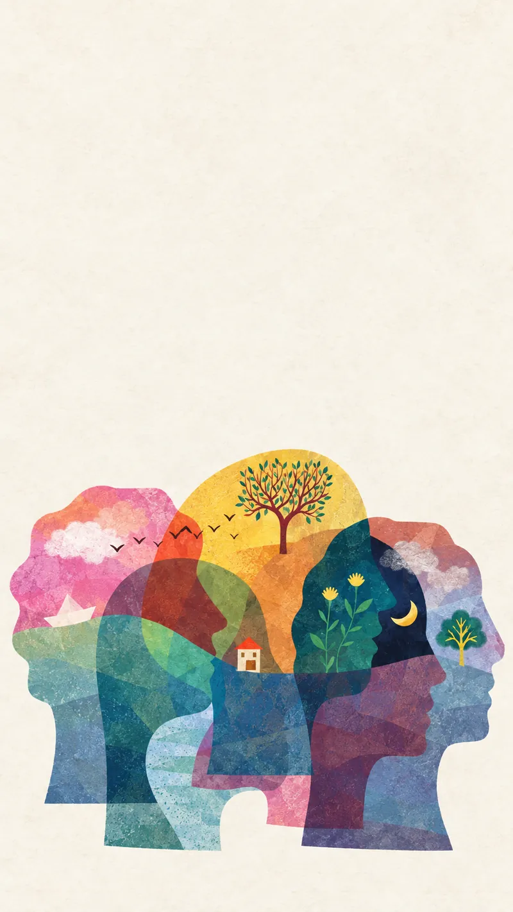
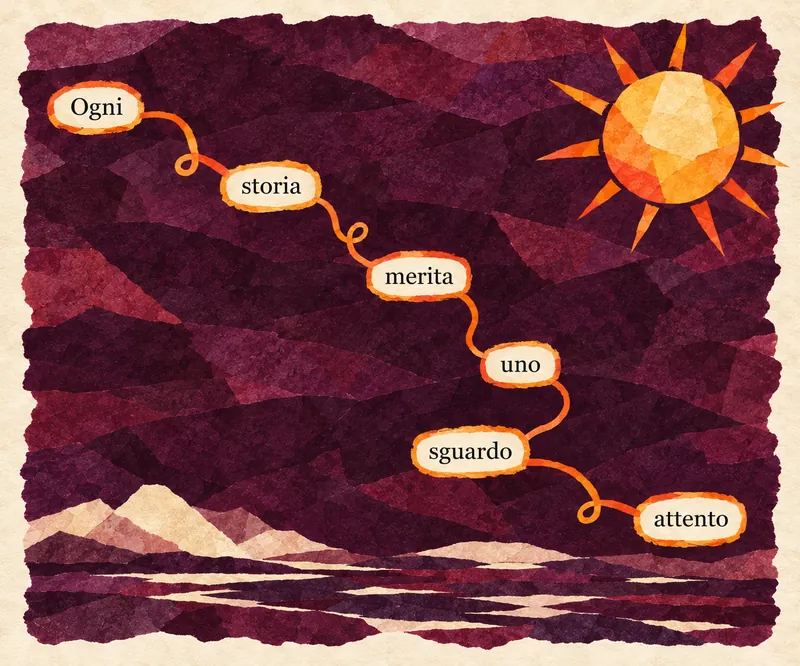

Conoscerci
Uno spazio per raccontare cosa ti ha portato a chiedere supporto.
Come lavoriamo
Il percorso prende forma a partire dalla persona, dai suoi bisogni e da ciò che emerge incontro dopo incontro.

Approccio sistemico-relazionale
Partiamo dall’ascolto della tua storia, senza fermarci soltanto al problema o al sintomo che stai attraversando. Consideriamo le relazioni, le esperienze vissute e il contesto di vita in cui sei inserito.
Il primo incontro
Non proponiamo soluzioni già pronte: costruiamo insieme nuovi modi di leggere ciò che stai vivendo, riconoscere risorse e aprire possibilità diverse. Ogni percorso prende forma nel tempo, a partire dai tuoi bisogni, obiettivi e caratteristiche.

Uno spazio per raccontare cosa ti ha portato a chiedere supporto.
Raccogliamo insieme elementi, bisogni, aspettative e obiettivi.
Puoi fare domande e capire se ti senti a tuo agio nel percorso.
I percorsi che offriamo
Per adulti e adolescenti.
Per comprendere e affrontare insieme le difficoltà relazionali.
Per dare spazio alle dinamiche e alle risorse della famiglia.
Uno spazio di confronto dedicato ai genitori.
Per chi preferisce o necessita di incontrarci a distanza.
Possibili percorsi di gruppo, valutati e attivati quando emergono richieste e obiettivi condivisi.